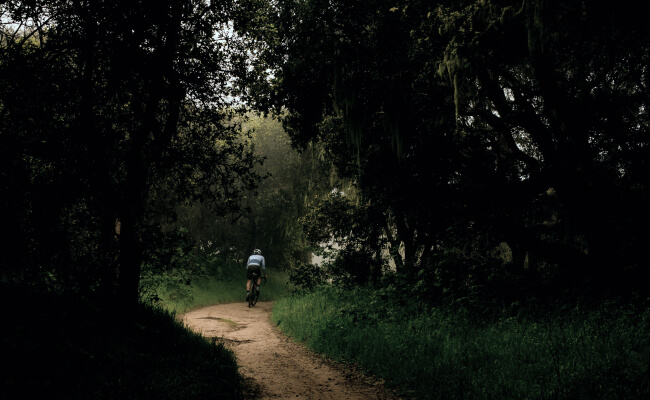

Шоссе
На шоссейном велосипеде можно ездить по асфальту на разных градиентах: будь то горы или равнины. Гонки проходят в командном пелотоне, но тренироваться можно и самостоятельно.


Грэвел
Грэвел похож на шоссейный велосипед, но конструкция рамы немного отличается, и на нём стоят более широкие покрышки, всё для того чтобы проехать по лёгкому бездорожью.

ТТ
ТТ — это велосипед для триатлона или раздельного старта, гооняют на таком велике только по равнинному асфальту, велик очень быстрые и аэродинамичный.


Велосипеды
Шоссе
Грэвел
ТТ